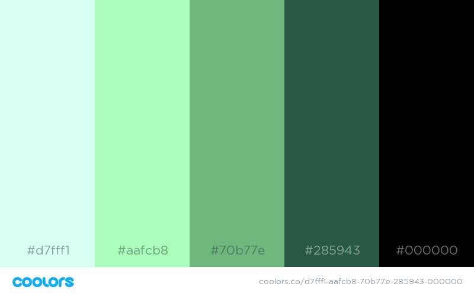
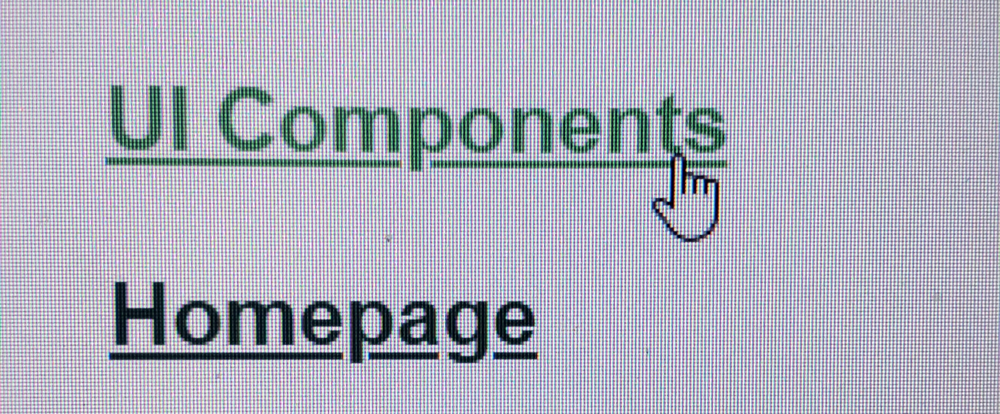

The purpose of the Style Guide is to keep track of styles and components of the People Helping People Website, for how they will look or feel. The Style Guide targets the desktop Web platform mainly. The inspirtaion for this style guide is inline with the example given to us in class.
The grid layout shows the pattern that the site will use. Layout will consist of a navigation bar on top, with main content in middle, portions on the sides blocked off for use of things such as saved items, or filtering and a footer at the bottom of the page.
The color palette is a gradient of mainly shades of green that will help to identify "People Helping People". All colors given below help to define the brand and be seen as attractive and welcoming to the consumers or clients working with "People Helping People. Colors should be used in a manner that reflects positive user interactions. Primary and Secondary colors should be used for larger aspects of website such as backgrounds,navigation and menus. Accent colors should be used to help define smaller items such as buttons, hover outlines, or font color.
Color Palette Descriptions for use on web site given with their hexidecimal code are given below. Note that the background of the main portion of the style guide is in white, not pictured button listed as the example will be the style guides background.
Primary color(s): #d7fff1, #FFFFFF
Secondary color: #aafcb8
Accent/Highlight color(s): #70b77e, #285943, #000000

The typography sets the expectaions for the way text elements
will be designed and work. Definitions for body text, headings,
hyperlinks, and other text elements are specified in this section.
Elements should be used as described necessary in their sections below.
Font family, size and weight. Font family is the same for the entire site
and is given below.
Font family: Arial, Helvetica, sans-serif;
Hyperlinks are colored in accent/highlight colors,
shown below with style of fontsize, color, and weight.
When hovered over a link will change to the lightest accent color.
This can be tested below when hovering but a screenshot is included to
show this without doing so. All hyperlinks located with in body text
should be underlined and styled in this way.
Below is an example in an image of what that looks like. As well as links to try out physically.
Font family is defined at top of stylesheet.
Font weight for lower than H1 is defaulted, and margins, padding,
or line-height may vary for location of text.
All H1 elements will be styled with a font weight of bold. H1 is reserved for
titles or headings. Subtitles are reserved to h2. Anything smaller used can be
resereved to bulleting or subcategories. Examples of what the sizes look like are
given below, heading one is styled how titles or headings will look.
Titles/Headings:
Subtitles:
Bulleting/Subcategories: